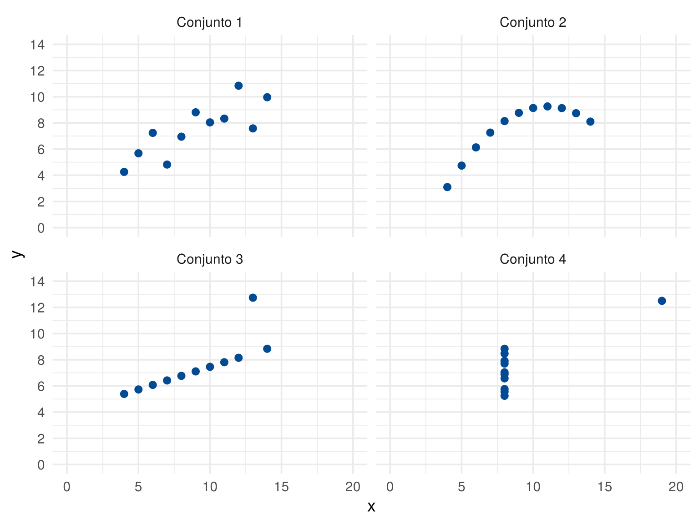
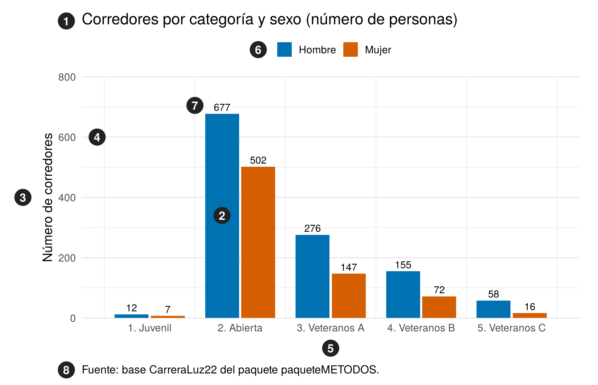
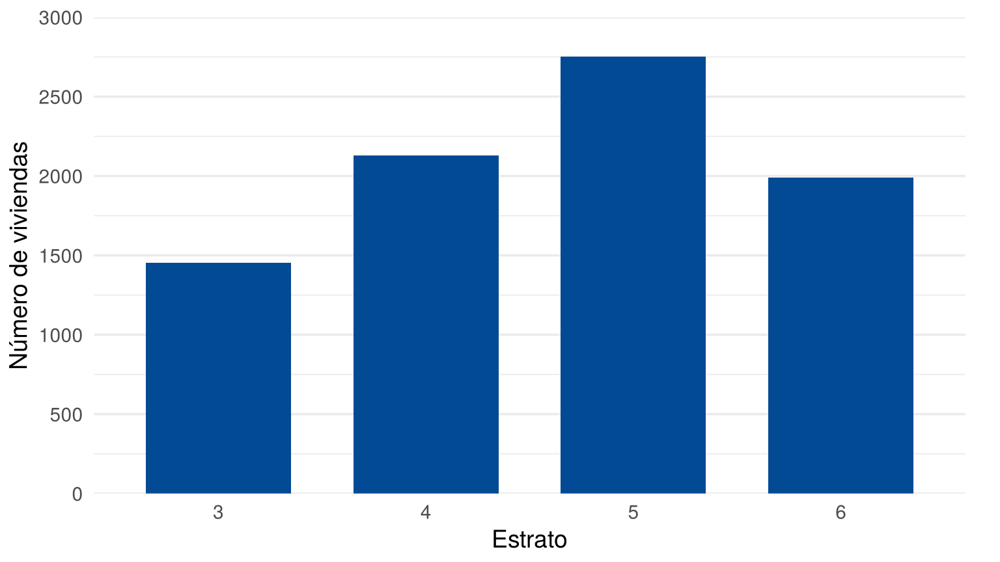
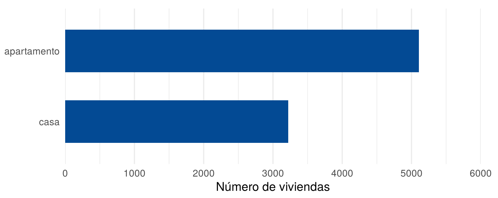

La representación gráfica de datos es una de las partes más importantes del análisis de datos, porque permite resumir e interpretar la información. Esta página presenta qué es un gráfico, para qué sirve, cuáles son sus elementos, cómo se lee y cómo se construye en R.
Esta página usa CarreraLuz22 y
vivienda_faltantes, del paquete
paqueteMETODOS, y el paquete ggplot2. Los
bloques de código se ejecutan en orden, porque algunos usan objetos
creados en bloques anteriores.
library(paqueteMETODOS)
data("CarreraLuz22")
data("vivienda_faltantes")library(ggplot2)Un gráfico es una representación visual de datos estadísticos que usa puntos, líneas, barras u otras figuras vinculadas a escalas de medición (INEI, 2009). No introduce información nueva: complementa los cuadros y facilita la comprensión (Contraloría General de la República e INEC de Panamá), y ayuda a comparar los datos e identificar su comportamiento (INEGI, 2022).
Wilke (2019) lo explica así: toda visualización convierte los valores de los datos en características del gráfico que se pueden medir, como la posición o el tamaño. La escala es la regla que une cada valor con esa característica.
| Característica visual | Qué puede representar | Ejemplo |
|---|---|---|
| Posición | El valor de una variable | La altura de un punto en un gráfico de dispersión |
| Tamaño | Una cantidad | La longitud de una barra |
| Color | Una categoría o una magnitud | El color de las barras de cada sexo |
| Forma | Una categoría | Círculos para un grupo y triángulos para otro |
| Tipo de línea | Una categoría | Línea continua para un grupo y punteada para otro |
Por eso, para leer un gráfico hay que saber qué variable corresponde a cada característica y en qué escala está.
El uso adecuado de los gráficos facilita:
Un gráfico también muestra lo que un resumen numérico no alcanza a
mostrar. Anscombe (1973) lo ilustró con cuatro conjuntos de datos, que
vienen incluidos en R con el nombre
anscombe. Las medias y las desviaciones estándar son casi
iguales en los cuatro:
round(sapply(anscombe, mean), 2) x1 x2 x3 x4 y1 y2 y3 y4
9.0 9.0 9.0 9.0 7.5 7.5 7.5 7.5 round(sapply(anscombe, sd), 2) x1 x2 x3 x4 y1 y2 y3 y4
3.32 3.32 3.32 3.32 2.03 2.03 2.03 2.03 Al graficarlos, los cuatro conjuntos resultan muy distintos:
datos <- data.frame(
conjunto = rep(paste("Conjunto", 1:4), each = 11),
x = c(anscombe$x1, anscombe$x2, anscombe$x3, anscombe$x4),
y = c(anscombe$y1, anscombe$y2, anscombe$y3, anscombe$y4)
)
ggplot(datos, aes(x = x, y = y)) +
geom_point(color = "#034A94", size = 2.5) +
facet_wrap(~ conjunto) +
scale_x_continuous(limits = c(0, 20), breaks = seq(0, 20, 5)) +
scale_y_continuous(limits = c(0, 14), breaks = seq(0, 14, 2)) +
theme_minimal(base_size = 14)
Cuatro conjuntos de datos con medias y desviaciones estándar casi iguales
Las guías de los institutos de estadística coinciden en los elementos que debe tener un gráfico (INEI, 2009; INEGI, 2022; Contraloría General de la República e INEC de Panamá). La siguiente figura los señala con números:

Elementos de un gráfico
partes <- as.data.frame(table(CarreraLuz22$categoria, CarreraLuz22$sex))
names(partes) <- c("categoria", "sexo", "corredores")
partes$posicion <- as.numeric(partes$categoria)
marcas <- data.frame(
numero = 1:8,
x = c(0.08, 1.8, -0.4, 0.42, 3, 2.2, 1.5, 0.08),
y = c(985, 340, 400, 600, -100, 890, 705, -172)
)
ggplot(partes, aes(x = posicion, y = corredores)) +
geom_col(aes(fill = sexo), position = position_dodge(0.8), width = 0.75) +
geom_text(aes(group = sexo, label = corredores), position = position_dodge(0.8),
vjust = -0.4, size = 3.8) +
geom_point(data = marcas, aes(x = x, y = y), size = 8, color = "#222222") +
geom_text(data = marcas, aes(x = x, y = y, label = numero), color = "white",
fontface = "bold", size = 4.4) +
scale_fill_manual(values = c("Hombre" = "#0072B2", "Mujer" = "#D55E00")) +
scale_x_continuous(breaks = 1:5, labels = levels(partes$categoria)) +
scale_y_continuous(breaks = seq(0, 800, 200), expand = c(0, 0)) +
coord_cartesian(xlim = c(0.5, 5.5), ylim = c(0, 800), clip = "off") +
labs(title = "Corredores por categoría y sexo (número de personas)",
x = NULL, y = "Número de corredores", fill = NULL,
caption = "Fuente: base CarreraLuz22 del paquete paqueteMETODOS.") +
theme_minimal(base_size = 14) +
theme(panel.grid.major.x = element_blank(), legend.position = "top",
plot.title = element_text(margin = margin(b = 8)),
plot.caption = element_text(hjust = 0, size = 12, margin = margin(t = 34)),
plot.margin = margin(14, 20, 10, 46))| Número | Elemento | Qué informa |
|---|---|---|
| 1 | Título | Qué muestra el gráfico y, si aplica, el lugar, el periodo y la unidad de medida |
| 2 | Figura | Las barras, puntos, líneas o sectores que representan los datos |
| 3 | Eje de valores | Qué variable se mide y en qué unidad |
| 4 | Escala | Las marcas que permiten leer los valores |
| 5 | Eje de conceptos | Las categorías o los periodos que se comparan |
| 6 | Leyenda | Qué significa cada color o forma |
| 7 | Etiquetas de datos | El valor exacto de cada figura |
| 8 | Fuente y notas | De dónde salen los datos y qué aclaraciones hay |
Friel, Curcio y Bright (2001) agrupan estos elementos en tres partes: el título y las etiquetas, que dan el contexto; el marco, formado por los ejes y las escalas; y las figuras, que muestran los datos (Arteaga et al., 2009).
En este curso, el título va en el pie de cada figura, numerado, y no dentro de la imagen. Así lo recomienda la guía del gobierno británico (Government Analysis Function, 2022).
Interpretar un gráfico es más que leer sus valores. La American Statistical Association recomienda que los estudiantes aprendan a interpretar lo que un gráfico revela y también lo que no revela (American Statistical Association, 2016). Para cualquier gráfico, se pueden seguir estos pasos:
La lectura también tiene niveles. Curcio propuso los tres primeros, y Friel, Curcio y Bright (2001) agregaron el cuarto (Arteaga et al., 2009). Estos son ejemplos con el número de viviendas por zona:
| Nivel | Qué se hace | Ejemplo |
|---|---|---|
| Leer entre los datos | Leer literalmente lo que está en el gráfico | La Zona Sur tiene 4726 viviendas |
| Leer dentro de los datos | Comparar e integrar los datos | La Zona Sur tiene más viviendas que las otras cuatro zonas sumadas |
| Leer más allá de los datos | Sacar conclusiones que no están en el gráfico | Si se agregan datos recogidos de la misma forma, se esperaría que el Sur siga siendo la zona con más viviendas |
| Leer detrás de los datos | Valorar cómo se obtuvieron los datos | ¿La base contiene todas las viviendas de Cali, o solo una parte? |
Cada página de tipos de gráficos explica cómo interpretar los más usados.
¿Qué problema resuelve? Con la base de
R, cada tipo de gráfico tiene su propia función y sus
propios argumentos. ggplot2 usa la misma lógica para todos
los gráficos.
¿Qué hace? Construye el gráfico por capas: se indican los datos, se asignan las variables a los ejes y se agrega la forma de dibujarlas. Después se ajustan las escalas, las etiquetas y el aspecto.
¿Cuándo usarlo? Cuando el gráfico va a un informe o
necesita varias capas, grupos o paneles. Para una mirada rápida a una
variable, también sirven hist(x) o
boxplot(x).
¿Cómo se usa? Se instala una sola vez con
install.packages("ggplot2"), y se carga en cada sesión con
library(ggplot2). Cada capa se agrega con el signo
+:
| Capa | Pregunta que responde | Ejemplo |
|---|---|---|
| Datos | ¿Qué tabla se usa? | ggplot(estratos, ...) |
| Variables | ¿Qué va en cada eje? | aes(x = estrato, y = viviendas) |
| Forma | ¿Cómo se dibuja? | geom_col() |
| Escalas | ¿Qué rango y marcas tienen los ejes? | scale_y_continuous(limits = c(0, 3000)) |
| Etiquetas | ¿Qué dicen los ejes? | labs(x = "Estrato") |
| Aspecto | ¿Cómo se ve el fondo? | theme_minimal() |
Por ejemplo, para el número de viviendas por estrato se prepara primero la tabla de frecuencias:
estratos <- as.data.frame(table(vivienda_faltantes$estrato))
names(estratos) <- c("estrato", "viviendas")
estratos estrato viviendas
1 3 1453
2 4 2131
3 5 2751
4 6 1992Después se escribe el gráfico. Los argumentos limits y
breaks fijan el rango y las marcas del eje, para que
contenga todas las barras. El argumento expand = c(0, 0)
hace que las barras empiecen justo en el eje, y plot.margin
deja espacio alrededor para que las últimas marcas no se corten.
ggplot(estratos, aes(x = estrato, y = viviendas)) +
geom_col(fill = "#034A94", width = 0.7) +
scale_y_continuous(limits = c(0, 3000), breaks = seq(0, 3000, 500), expand = c(0, 0)) +
labs(x = "Estrato", y = "Número de viviendas") +
theme_minimal(base_size = 14) +
theme(panel.grid.major.x = element_blank(), plot.margin = margin(10, 20, 5, 5))
Número de viviendas por estrato
| Problema | Causa | Solución |
|---|---|---|
could not find function "ggplot" |
No se cargó el paquete | Ejecutar library(ggplot2) |
| El gráfico sale vacío | Faltó la capa de forma | Agregar geom_col(),
geom_point() u otra |
geom_col() requires the following missing aesthetics: y |
geom_col() necesita la altura de las
barras |
Indicar y en aes(), o usar
geom_bar() para que cuente |
Removed 2 rows containing... |
Hay datos faltantes, o limits deja datos
por fuera |
Filtrar los faltantes o ampliar
limits |
| Las barras salen en otro color | El color se escribió dentro de aes() |
Escribir fill = "#034A94" fuera de
aes() |
| El lector no sabe qué se mide | Faltan el título, la unidad o los ejes | Revisar los elementos clave antes de publicar |
Observe la figura del número de viviendas por estrato. Indique cuál es el eje de valores, cuál es el eje de conceptos y qué elemento clave le falta. ¿Por qué esta figura no necesita leyenda?
El eje de valores es el vertical, con el número de viviendas. El eje de conceptos es el horizontal, con los estratos. Le falta la fuente de los datos. No necesita leyenda porque todas las barras representan lo mismo.
Haga un gráfico de barras del número de viviendas por tipo. Antes unifique las categorías como se hizo en Tablas de frecuencia. Fije el eje para que contenga las barras.
tipo <- tolower(vivienda_faltantes$tipo)
tipo[tipo == "apto"] <- "apartamento"
tipos <- as.data.frame(table(tipo))
names(tipos) <- c("tipo", "viviendas")
ggplot(tipos, aes(x = viviendas, y = reorder(tipo, viviendas))) +
geom_col(fill = "#034A94", width = 0.6) +
scale_x_continuous(limits = c(0, 6000), breaks = seq(0, 6000, 1000), expand = c(0, 0)) +
labs(x = "Número de viviendas", y = NULL) +
theme_minimal(base_size = 14) +
theme(panel.grid.major.y = element_blank(), plot.margin = margin(10, 20, 5, 5))
Número de viviendas por tipo
El siguiente código busca un gráfico de barras azules de los estratos, pero las barras salen de otro color, con una leyenda que no sirve. ¿Cuál es el error?
ggplot(estratos, aes(x = estrato, y = viviendas, fill = "#034A94")) +
geom_col()El color está dentro de aes(). Allí R
lo interpreta como una variable con un único valor, y no como un color.
Debe escribirse dentro de geom_col():
ggplot(estratos, aes(x = estrato, y = viviendas)) +
geom_col(fill = "#034A94")ggplot2. Lista de todas las funciones del
paquete.Última revisión: 5 de noviembre de 2026.